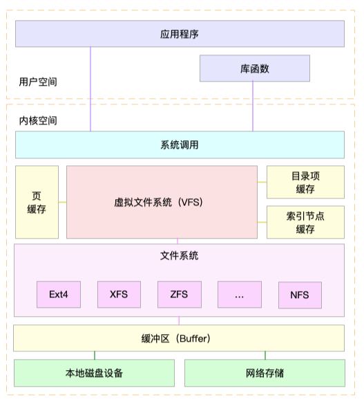
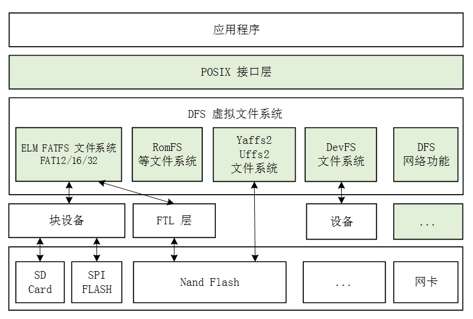

1. 简介
文件系统是指数据的组织方式，定义数据在磁盘上的保存、读取和更新方法。不同的文件系统可以根据存储设备的不同进行优化，提高效率。文件系统简单的按类型可分：
1. 本地文件系统
2. 网络文件系统
Linux 内核支持诸多文件系统，可以让我们从一系列特性中选择以适用于个人的特殊需要。所幸大多数默认文件系统种类都能满足你的任何需要。一些文件系统专为特殊介质设计，如 iso9660 文件系统一般只能用于 CD 和 DVD 介质。
2. 局域网的共享文件夹设置
性能问题
一般认为SMB协议会占用很多网络带宽，因为每个客户端均在整个子网内广播其存在。但是SMB本身并不使用广播。SMB造成的广播问题实际上是NetBIOS的服务定位协议造成的。一般来说Microsoft Windows服务器使用NetBIOS来协议和定位服务。而NetBIOS则定时向一个特定的服务器广播一个服务的存在。对于一个少于20个服务器的网络来说这个方式是可行的。但是随服务器数目的增加广播造成的交通会导致问题。通过适当地实现WINS定位协议这个问题可以被缓和。WINS使用更高级的系统来确定和中央化服务需求，但是造成自己的设计和保管网络的问题。动态DNS是另一个解决方法。微软本身推荐在微软的活动目录环境下使用动态DNS。网络延迟对SMB协议的速度有非常大的冲击。在服务器之间网络延迟大的情况下通过SMB来更换文件夹非常明显地反映了这个问题。比如在通过万维网使用虚拟专用网时网络延迟就会比较大，这时使用SMB就很恼人
3. 单线的文件系统
单线的文件系统 stand-alone (UNIX) file systems
3.1. 涉及概念
-
文件：命名的有逻辑相关的数据集合
File: named collection of logically related data -
Unix 文件：未解释的字节序列
Unix file: an uninterpreted sequence of bytes -
文件系统： 提供数据和存储功能的逻辑视图
File system: – Provides a logical view of data and storage functions
– 对用户友好的界面
– 便于创建、修改、组织、删除文件
– 提供共享
– 提供保护

3.2. 文件系统分类
3.3. 磁盘文件系统
磁盘文件系统是一种设计用来利用数据存储设备来保存计算机文件的文件系统，最常用的数据存储设备是磁盘驱动器，可以直接或者间接地连接/挂载到计算机上。例如：FAT、exFAT、NTFS、HFS、HFS+、ext2、ext3、ext4、ODS-5、btrfs、XFS、UFS、ZFS。有些文件系统是行程文件系统（也有译作日志文件系统）或者追踪文件系统。
文件系统细分还可以分为：
非日志文件系统：传统的文件系统，不带日志功能。日志文件系统：指在文件系统发生变化时，先把相关的信息写入一个被称为日志的区域，然后再把变化写入主文件系统的文件系统。在文件系统发生故障（如内核崩溃或突然停电）时，日志文件系统更容易保持一致性，并且可以较快恢复。
3.3.1. 非日志文件系统
Ext：第一个专门为Linux的文件系统类型，叫做扩展文件系统。它在1992年4月完成的。它为Linux的发展取得了重要作用。但是在性能和兼容性上存在许多缺陷。现在已经很少使用了。
Ext2 ：与其他文件系统相比，ext2 十分简单化，它比大多数其他文件系统在读写数据时要快。但并未包含日志功能。这意味着在一次硬性崩溃后，必须彻底检查文件系统以发现和修复（可能的话）错误。
Minix ：Llnux支持的第一个文件系统，对用户有很多限制而且性能低下。有些没有时间标记，其文件名最长l 4个字符。minix 文件系统最大的缺点是最大只能使用64M 的硬盘分区，所以在目前已经没有人使用它了。
Xia ：Minix文件系统修正后的版本。在一定程度上解决了文件名和文件系统大小的局限。但没有新的特色，目前很少有人使用。
Msdos ：是在Dos、Windows和某些OS/2 操作系统上使用的一种文件系统，其名称采用“8+3”的形式，即8个字符的文件名加上3个字符的扩展名。
umsdos ：Linux下的扩展msdos文件系统驱动，支持长文件名、所有者、允许权限、连接和设备文件。允许一个普通的msdo s文件系统用于Linux，而且无须为它建立单独的分区。
Vfat ：是Windows9x 和 Windows NT/2000下使用的一种Dos文件系统，其在 Dos 文件系统的基础上增加了对长文件名的支持。
iso9660 ：是专门为光学介质（如 CD 和 DVD）设计的文件系统。因为光学磁盘是只读介质，Linux 内核甚至没有包括对该文件系统的写入支持。为创建一个 iso9660 文件系统，你必需使用用户级工具，如 mkisof(8) 或 growisfs(8)。
FAT16 ：是一种16位的文件分配表，用来对磁盘（软盘、硬盘、U盘等）进行分区，以前用的软盘大多采用FAT格式，windows98 、windows ME 之前的操作系统也采用这种格式.
FAT32：是Windows系统硬盘分区格式的一种。这种格式采用32位的文件分配表，使其对磁盘的管理能力大大增强，突破了FAT16对每一个分区的容量只有2 GB的限制
3.3.2. 日志文件系统
ext3 ：ext3 与 ext2 相似，它的设计目的是在大多数情况下取代 ext2。ext3 和 ext2 的底层代码基本相同，但加入了日志支持。实际上 ext3 与 ext2 非常相像，可以直接快捷地将其中一种转为另一种而不会丢失数据。因为这些，ext3 十分流行。在突然的硬件故障时也有许多用来恢复数据的工具。ext3 是一个用于一般用途且带有日志功能的不错的文件系统。但在一些特殊情况下没有不如其他的日志文件系统表现得那么好。ext3 这种文件系统的一个缺陷就是仍需时常进行彻底检查。一般是在挂载文件系统时，通常为开机时，会造成讨厌的延迟。
ext4 ： 是 ext 系列文件系统中最新的一个。它基于 ext3 设计，并加入了文件系统应该能做什么的一些理念。尽管当前主流操作系统都支持 ext4，你应该记住这种文件系统仍然很新（尤其是从文件系统方面来说）。如果你觉得稳定性比性能更重要，你可能会选择其他的文件系统，如 ext3。说完这些，我们来说 ext4 的确声称比 ext3 在性能角逐方面有很大的提升，但是许多人在稳定使用方面仍不相信它。
reiserfs ： 是 Linux 内核支持得最久的日志文件系统之一。它是一种非常快速的文件系统，非常适合多个小文件的存储、读取及写入。遗憾的是，reiserfs 在驱动器出现问题时恢复工具很少，且比 ext3 崩溃更频繁。
XFS ： 是由 SGI 贡献到 Linux 内核的，是处理大分卷和文件的最好的文件系统之一。XFS 比其他文件系统使用更多的 RAM。但是如果你需要处理大文件，其性能足以弥补内存内存使用方面的不足。XFS 在桌面及笔记本的使用上也不一定不适合，而且它在需要整天处理大文件的服务器上表现得确实很好。与 ext3 类似，XFS 是完全的日志文件系统。
Btrfs ：通常念成Butter FS，由Oracle于2007年宣布并进行中的COW(copy-on-write式)文件系统。目标在取代Linux目前的ext3文件系统，改善ext3的限制，特别是单一文件的大小，总文件系统大小及加入文件校验和。加入目前ext3/4未支援的功能，例如可写的磁盘快照(snapshots)，以及支持递归的快照(snapshots of snapshots)，内建磁盘阵列（RAID）支援，支持子卷(Subvolumes)的概念，支持在线调整文件系统大小。
JFS ： 是由 IBM 贡献至 Linux 内核的，在极限状况下的反应速度使其很有名。它可以横跨巨大的分卷，这使其适用于网络附加存储（Network Attached Storage，NAS）设备。JFS 的长久历史及彻底的测试使其成为 Linux 下最可靠的日志系统之一。
vfat ：有时你可能需要在 Windows 和 Linux 之间共享数据，却不能通过网络进行传输。这时你需要一个共享分区或是 USB 闪存驱动器。不起眼的 vfat 文件系统在这里却是最好的选择，因为它被各种各样的操作系统支持。遗憾的是，作为微软设计的文件系统，它与传统的 Linux 文件系统储存权限的方式不同。这意味着需要使用特殊的选项来让多个用户读取该文件系统上的数据。
Hpfs ：High Performance File System（HPFS） 高性能文件系统（HPFS） HPFS是Microsoft的LAN Manager中的文件系统，同时也是IBM的LAN Server和OS／2的文件系统。HPFS能访问较大的硬盘驱动器，提供更多的组织特性并改善了文件系统的安全特性。 Sysv ：System V/Coherent 在Linux平台上的文件系统。
Proc ：Linux 系统中作为一种伪文件系统出现的，它用来作为连接内核数据结构的界面。
3.4. 光盘
ISO 9660和UDF被用于CD、DVD与蓝光光盘。
3.5. 闪存文件系统
闪存文件系统是一种设计用来在闪存上储存文件的文件系统。随着移动设备的普及和闪存容量的增加，这类文件系统越来越流行。
尽管磁盘文件系统也能在闪存上使用，但闪存文件系统是闪存设备的首选，理由如下：
擦除区块：闪存的区块在重新写入前必须先进行擦除。擦除区块会占用相当可观的时间。因此，在设备空闲的时候擦除未使用的区块有助于提高速度，而写入数据时也可以优先使用已经擦除的区块。
随机访问：由于在磁盘上寻址有很大的延迟，磁盘文件系统有针对寻址的优化，以尽量避免寻址。但闪存没有寻址延迟。
写入平衡（Wear levelling）：闪存中经常写入的区块往往容易损坏。闪存文件系统的设计可以使数据均匀地写到整个设备。
日志文件系统具有闪存文件系统需要的特性，这类文件系统包括JFFS2和YAFFS。也有为了避免日志频繁写入而导致闪存寿命衰减的非日志文件系统，如exFAT。
3.6. 数据库文件系统
文件管理方面的一个新概念是一种基于数据库的文件系统的概念。不再（或者不仅仅）使用分层结构管理，文件按照他们的特征进行区分，如文件类型、专题、作者或者亚数据进行区分。于是文件检索就可以按照SQL风格甚至自然语言风格进行。
例如BFS和WinFS。
3.7. 网络文件系统（共享文件系统）
网络文件系统（NFS，Network File System）是一种将远程主机上的分区（目录）经网络挂载到本地系统的一种机制
Linux 还支持许多网络文件系统（客户端和服务器），这可以让我们在多个电脑之间透明地共享数据。
| 主要操作系统 | 应用层协议 | 传输层协议 |
|---|---|---|
| Mac OS | 服务器消息块（SMB）、苹果归档协议 | TCP、UDP或AppleTalk |
| 类Unix系统 | 网络文件系统（NFS）、SMB | TCP或UDP |
| MS-DOS、Windows | SMB | TCP、NBT（包含UDP协议）NBF或其他NetBIOS传输 |
| Novell NetWare（服务器）MS-DOS、Windows（客户端） | NCP和SAP | SPX（通过IPX），或TCP |
共享文件访问不应该与使用文件传输协议（FTP）、蓝牙 IRDA OBject EXchange（OBEX）协议的文件传。
共享文件的访问对用户来说是透明的，就好像它是本地文件系统中的资源一样，并且支持多用户环境。这包括用户编辑远程文件时的并发控制或锁 ，以及文件系统权限。
共享文件访问通常被认为是一个本地网络（LAN）服务，而FTP是一个互联网服务。
文件传输协议（File Transfer Protocol，FTP）
是用于在网络上进行文件传输的一套标准协议，它工作在 OSI 模型的第七层， TCP 模型的第四层， 即应用层， 使用 TCP 传输而不是 UDP， 客户在和服务器建立连接前要经过一个“三次握手”的过程， 保证客户与服务器之间的连接是可靠的， 而且是面向连接， 为数据传输提供可靠保证。
我们会讨论两个常见的网络文件系统：NFS 和 SMB。
3.7.1. NFS
网络文件系统（Network File System，NFS），一种使用于分散式文件系统的协议，由sun公司开发，于1984年向外公布。功能是通过网络让不同的机器、不同的操作系统能够彼此分享个别的数据，让应用程序在客户端通过网络访问位于服务器磁盘中的数据，是在Unix系统间实现磁盘文件共享的一种方法。
NFS 的基本原则是“容许不同的客户端及服务端通过一组RPC分享相同的文件系统”，它是独立于操作系统，容许不同硬件及操作系统的系统共同进行文件的分享。 NFS 提供了以下的服务：
- 在目录（directory）中查找文件
- 列出目录中的文件
- 管理目录
- 取得各文件的属性（file attribute）
- 文件的读／写
NFS于1984年由升阳(SUN)公司推出不久即广为业界及学术界所接受。尽管当时不同的大学及实验室已研发了多种分布式文件系统，然而 NFS 是第一个能够于学术及商业上成功应用的产品。其后升阳为了使 NFS 成为一种标准，于1989年正式公开发布其接口，使得更多厂商能够把 NFS 加入其产品之中。NFS 是一个成功的文件共享方法，但它最大的问题是它不太适合于大型的分散式系统。
2000年推出的第四版NFS，受到OpenAFS与SMB的影响很大。
挂载共享
挂载 NFS 共享与挂载本地文件系统稍有不同。不是指定一个本地设备，而是需要告诉 mount NFS 服务器的域名或 IP 地址，以及要挂载的目录，中间用一个冒号隔开。
mount -t nfs darkstar.example.com:/home /home</pre>
NFS（Network File System，网络文件系统）
NFS协议是一个建立在Sun公司的 RPC协议基础上的客户端/服务器应用程序，客户端通过向一台NFS服务器发送RPC请求来访问其中的文件。

参考资料 https://www.cnblogs.com/me80/p/7464125.html
3.7.2. SMB
Samba，是种用来让UNIX系列的操作系统与微软Windows操作系统的SMB/CIFS（Server Message Block/Common Internet File System）网络协定做连结的自由软件。
目前的版本（v3）不仅可存取及分享SMB的资料夹及打印机，本身还可以整合入Windows Server的网域，扮演为网域控制站（Domain Controller）以及加入Active Directory成员。简而言之，此软件在Windows与UNIX系列OS之间搭起一座桥梁，让两者的资源可互通有无。
连接到 SMB [http://www.example.com 链接标题]共享（samba shares）十分直接。遗憾的是，SMB 的支持度没有 NFS 那么好，但它还是提供了与 Windows 主机的良好性能和连接性。因此，SMB 是部署在局域网的文件共享协议。
挂载与共享
值得庆幸的是挂载 SMB 共享很简单，与 NFS 共享十分相似。你可以用同样的方式告诉 mount 在哪里找到服务器和及想要读取哪个共享。另外，你必须指定一个用户名和密码。
# mount -t cifs //darkstar/home /home -o username=alan,password=secret
你可能想知道为什么该文件系统是 cifs 而非 smbfs。在 Linux 内核的较老版本中，用的是 smbfs，后来被性能更好、更安全的 cifs 驱动所取代。
所有的 SMB 共享都需要用户名和密码作为参数。这在你想要将 smb 共享放到 fstab 时会导致安全问题。可以使用 credentials 参数来避免这一问题。credentials 会指向含有用户名和密码信息的文件。只要该文件能够得到安全地保护并只能由 root 读取，那么你的认证资格受到影响的可能性就会减小。
SMB（Server Message Block，服务器消息块）是基于NetBIOS的一套文件共享协议，它由Microsoft公司制订，用于Lan Manager和Windows NT服务器系统中，实现不同计算机之间共享打印机、串行口和通讯抽象。
与功能类似的网络文件系统（NFS）相比，NFS的消息格式是固定长度，而CIFS的消息格式大多数是可变长度，这增加了协议的复杂性。CIFS消息一般使用NetBIOS或TCP协议发送，分别使用不同的端口139或445，当前倾向于使用445端口。CIFS的消息包括一个信头（32字节）和消息体（1个或多个，可变长）
3.8. Samba概述
Samba是一种开放源代码的自由软件，可以为SMB/CIFS客户提供所有方式的文件和打印服务，包括各种版本的Windows客户。
SMB使用点对点的通讯方式，一个客户端向一个服务器提出请求，服务器相应地回答。SMB协议中的一部分专门用来处理对文件系统的访问，使得客户端可以访问一个文件服务器。SMB也有行程间通信的部分。SMB协议尤其适用于局部子网，但是也可以被用来通过万维网来链接不同的子网。Microsoft Windows的文件和打印机分享主要使用这个功能。
SMB服务器向网络上的客户端提供文件系统和其它资源。客户端计算机也可能有其自己的、不共享的硬盘，但是可能也想使用服务器上分享的文件系统和打印机。这是SMB为什么这么出名和广泛地被使用的原因。SMB普及的另一个原因是它使用适合NT网域的协议，至少提供基于NT网域式的认证。NT网域协议是一个微软远程过程调用服务，几乎只能被SMB进程间通讯的命名管道使用。几乎所有SMB服务器的实现使用NT网域来认证用户是否可以访问一个资源。
| 文件系统 | 最小块 | 最大块 |
|---|---|---|
| NTFS格式(windows的分区，Linux也能用) | 支持最大分区为2TB，最大文件为2TB； | |
| FAT32格式(windows的分区，Linux也能用) | 支持最大分区为128GB，最大文件为4GB； | |
| NTFS格式(windows的分区，Linux也能用) | 支持最大分区为2TB，最大文件为2TB； | |
| Ext2格式 | 最大分区大小为4TB，最大文件大小为1TB； | |
| Ext3格式 | 最大分区大小为16TB，最大文件大小为2TB； | |
| Ext4格式 | 最大分区大小为1EB，最大文件大小为16TB; | |
| ReiserFS格式 | 最大分区大小为4TB，最大文件大小为1TB； |
注：1EB=1024PB，1PB=1024TB，1TB=1024GB
3.9. 查看文件系统
Linux
查看
#只可以查看已经挂载的分区和文件系统类型。 df -T >>> Filesystem Type 1K-blocks Used Available Use% Mounted on /dev/sda1 ext4 20642428 3698868 15894984 19% / tmpfs tmpfs 32947160 0 32947160 0% /dev/shm #也可以查看未挂载的文件系统类型。 lsblk -f >>> NAME FSTYPE LABEL UUID MOUNTPOINT sda |-sda1 ext4 c4f338b7-13b4-48d2-9a09-8c12194a3e95 / |-sda2 swap 21ead8d0-411f-4c23-bdca-642643aa234b [SWAP] |-sda3 ext4 2872b14e-45va-461e-8667-43a6f04b7bc9
Linux操作系统使用虚拟文件系统（VFS）向上和用户进程文件访问系统调用接口，向下和具体不同文件系统的实现接口。VFS屏蔽了具体文件的实现细节，向上提供统一的操作接口。通过VFS可以实现任意的文件系统，这些文件系统通过文件访问系统调用都可以访问。所以Linux系统核心可以支持十多种文件系统类型，比如Btrfs、JFS、 ReiserFS、ext、ext2、ext3、ext4、ISO9660、XFS、Minx、MSDOS、UMSDOS、VFAT、NTFS、HPFS、NFS、SMB、SysV、PROC等。
DrvFs
为了便于和Windows系统之间的互操作，WSL使用了DrvFs文件系统。WSL将具有可支持文件系统的固定驱动器自动挂载到/mnt目录中，例如/mnt/c、/mnt/d等。目前，仅能支持NTFS和ReFs卷标。
4. 分布式文件系统

分布式文件系统可以提供基于位置的寻址和冗余等功能，这些特性可以提高可靠性或降低集群其他部分的复杂性，对用户提供透明的文件服务。
分布式文件系统可以在许多方面实现"透明性"。也就是说，它们的目标是让客户机程序"看不见"它们，这些客户端程序“看到”的事一个类似于本地文件系统的系统。在幕后，分布式文件系统处理定位文件、传输数据，并可能提供下面列出的其他功能。
• 访问透明性 ：客户端感受不到文件是分布式的，并且可以像访问本地文件一样访问它们。
• 位置透明性 ：存在一致的名字空间，包含本地文件和远程文件。文件名不提供其位置。
• 并发透明性 ：所有客户端都具有相同的文件系统状态视图。这意味着，如果一个进程正在修改一个文件，那么同一系统或远程系统上访问该文件的任何其他进程都会以一致的方式看到修改。
• 失败透明性 ：客户端和客户端程序应在服务器发生故障后正常运行。
• 异构性 ：文件服务应该跨不同的硬件和操作系统平台提供。
• 可扩展性 ：文件系统应该在小型环境（1台机器，12台机器）中运行良好，并且可以优雅地扩展到更大的（数百到数万个系统）。
• 复制透明性 ：客户端不应感受到文件复制是跨多个服务器执行的。
• 迁移透明度 ：文件在不同的服务器之间的移动不应该让客户感受到。
4.1. 常见的分布式文件系统有
1 Google 的GFS Google file System
2 Hadoop 的HDFS
3 加州大学圣克鲁克 Ceph
4 GlusterFS （红帽）
Q: 放在两台可以上网的电脑的文件，叫分布式文件系统吗？
A: 不叫，外部不可以从一个地址寻找文件。需要基于位置的寻址，或者说没有元数据
MetaData 元数据：描述数据的数据，主要是描述数据的属性信息，包括数据存储位置、历史数据描述、资料查找、文件记录
1
参考资料
5. 参考资料
https://support.microsoft.com/zh-cn/help/4092694/windows-10-file-sharing-over-a-network
-
https://www.cnblogs.com/alantu2018/p/8461749.html ↩